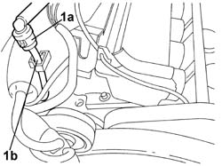
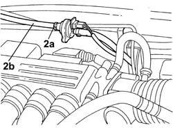

1080E63 Flexible PIPE between rigid pipe and fuel vapour cut out SOLENOID VALVE - R.R.
- Path
- Procedures > 10 ENGINE > 1080 EMISSION CONTROL SYSTEM > 1080E EVAPORATION CONTROL SYSTEM > 1080E63 Flexible PIPE between rigid pipe and fuel vapour cut out SOLENOID VALVE - R.R.
- Kind
- repair procedure (removal / refitting; the operation number is the code)
- Applies to
- engines: 3.0 V6, 3.2 V6; all production periods
- Interactive page
- https://sloeber94.github.io/elrnDB-lThss/en/#/187496
Applies to: engines: 3.0 V6, 3.2 V6; all production periods
 Removing
Removing
 Refitting
Refitting- Make sure that the ignition key is in the OFF position, then disconnect the negative battery terminal (-).
See in Op. 7040D50 ENGINE COMPARTMENT UPPER SOUND INSULATION SHIELD - R.R.
1. Disconnect the rapid connector (1a) for the fuel vapour recovery pipe from the intake chamber (1b).

Applies to: engines: 3.0 V6, 3.2 V6; all production periods
- Disconnect the rapid connector (1a) for the flexible section of the fuel vapour recovery pipe from the rigid section (1b).

Applies to: engines: 3.0 V6, 3.2 V6; all production periods
Refitting
Removing- Connect the rapid connector for the flexible section of the fuel vapour recovery pipe to the rigid section.
- Connect the rapid connector for the fuel vapour recovery pipe to the intake chamber.
See in Op. 7040D50 ENGINE COMPARTMENT UPPER SOUND INSULATION SHIELD - R.R.
- Connect the negative battery terminal and position the cover on the left hand side of the luggage compartment.